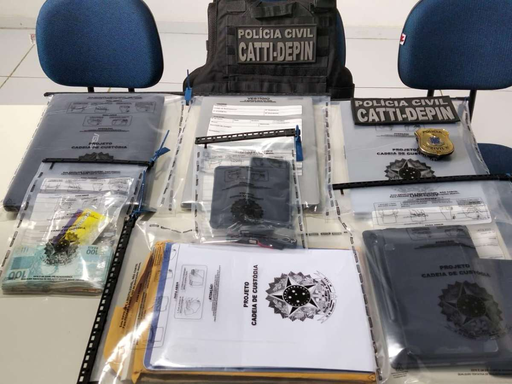
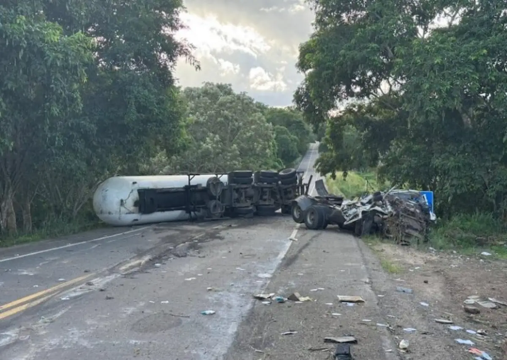

TV Davi® Notícias de Feira de Santana e Região
TV Davi® Notícias de Feira de Santana e Região

Cid Bruno da Silva Freitas Souza foi encontrado morto em janeiro deste ano, no bairro do Trobogy.
Na ação, esposa de líder da organização criminosa e responsável pela engrenagem financeira do grupo foi presa no Rio de Janeiro.

Abalo ocorreu em Serrinha. Segundo o Laboratório Sismológico da Universidade Federal do Rio Grande do Norte, não há relatos de moradores que tenham sentido o tremor.

Acidente ocorreu por volta das 5h15 desta quinta-feira (7), na altura do município de Conceição do Jacuípe.

As investigações apontam o envolvimento de dois suspeitos que atuavam como funcionários de uma instituição financeira na unidade de Canudos.

O jovem, que ainda não foi identificado, passava pelo local no momento do acidente e acabou sendo atingido.

Restos mortais foram encontrados na tarde deste domingo (3). Investigação deve esclarecer causa da morte.

Incêndio, que aconteceu no domingo (3), começou quando uma das crianças brincava com isqueiro e ateou fogo em um colchão.

Caso ocorreu em Feira de Santana. Suspeito segue à disposição da Justiça.
O volume de munições chamou a atenção da equipe, pois havia uma grande quantidade de cartuchos de diferentes calibres.

Texto, de autoria do vereador Marcos Lima (União Brasil), permite que prefeitura estabeleça diretrizes para disponibilizar e aplicar medicamento nas Unidades de Saúde da Família (USFs).

Caso ocorreu no Morro de Ponta Aguda, em Itatim. Vítima foi identificada como Igor Andreoni Barbabella de Oliveira, 40 anos, de Belo Horizonte, Minas Gerais.

Carreta do projeto vai percorrer por alguns bairros do município até a próxima sexta-feira (1°).
Homem e mulher foram pelos crimes ocorridos em janeiro e abril de 2026 e tiveram motivação ligada a um conflito familiar.
O local funcionará como principal base logística do projeto, concentrando atividades estratégicas para o início das obras.
Segundo o HGCA, a participação da comunidade é essencial para garantir a continuidade dos atendimentos hospitalares.
O vigilante reagiu, efetuando disparos de arma de fogo, o que resultou no óbito do agressor ainda no local.

Suspeito foi localizado em uma residência no Conjunto Feira X, em Feira de Santana, e tinha um mandado de prisão preventiva em aberto pelo crime de porte ilegal de arma de fogo.